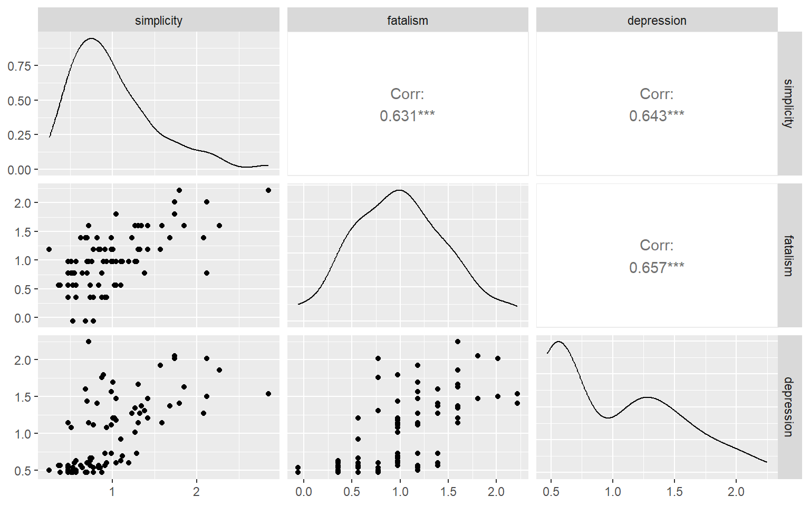
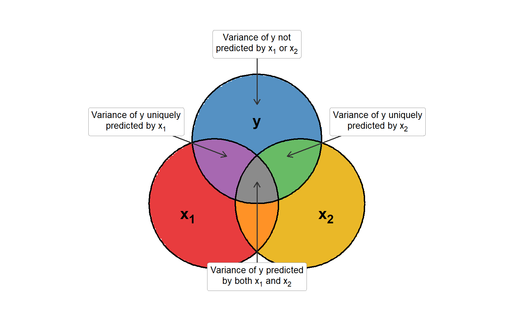
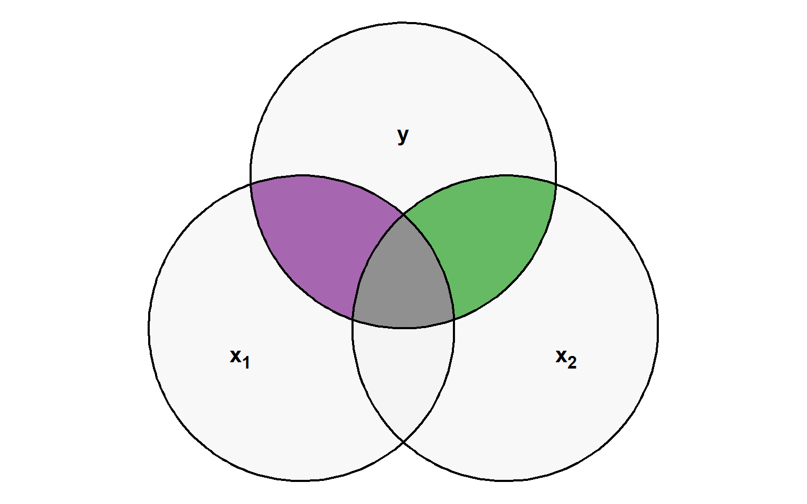
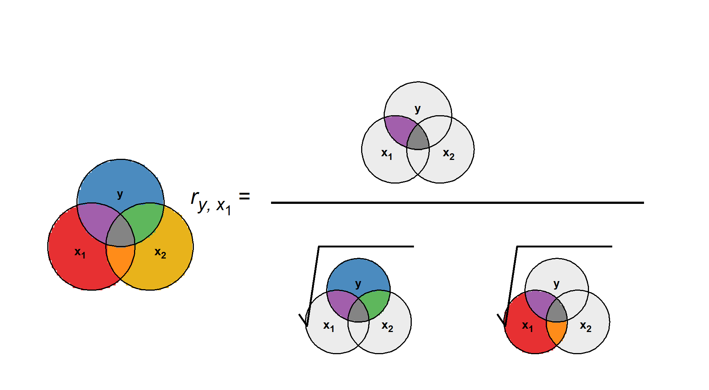
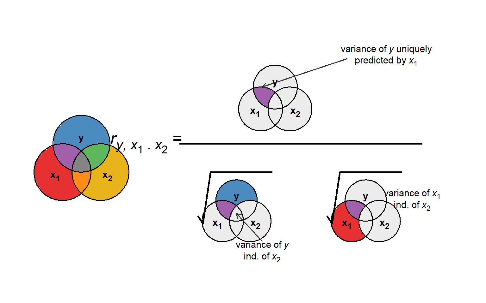
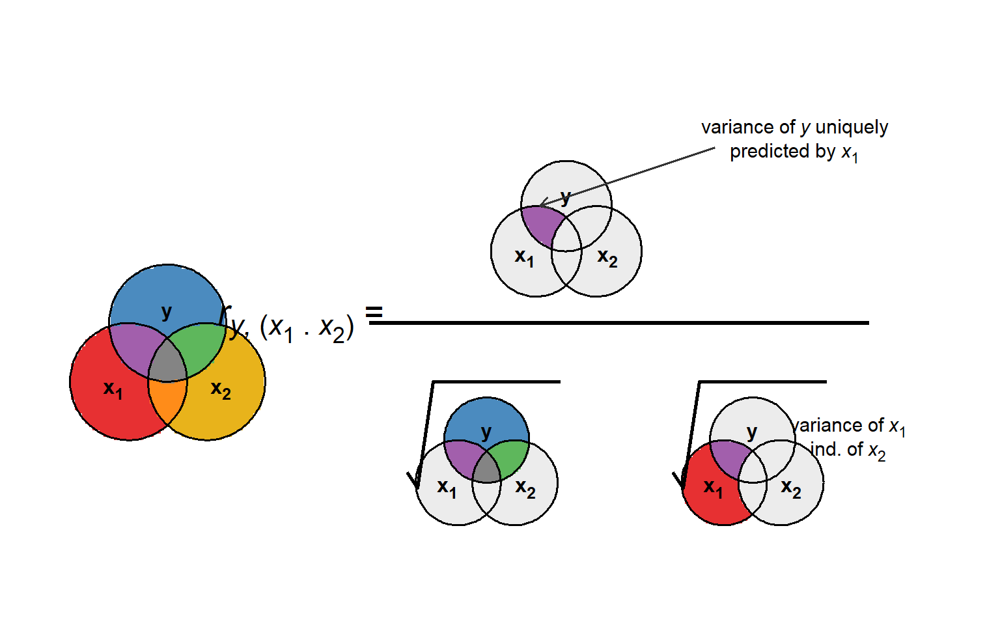
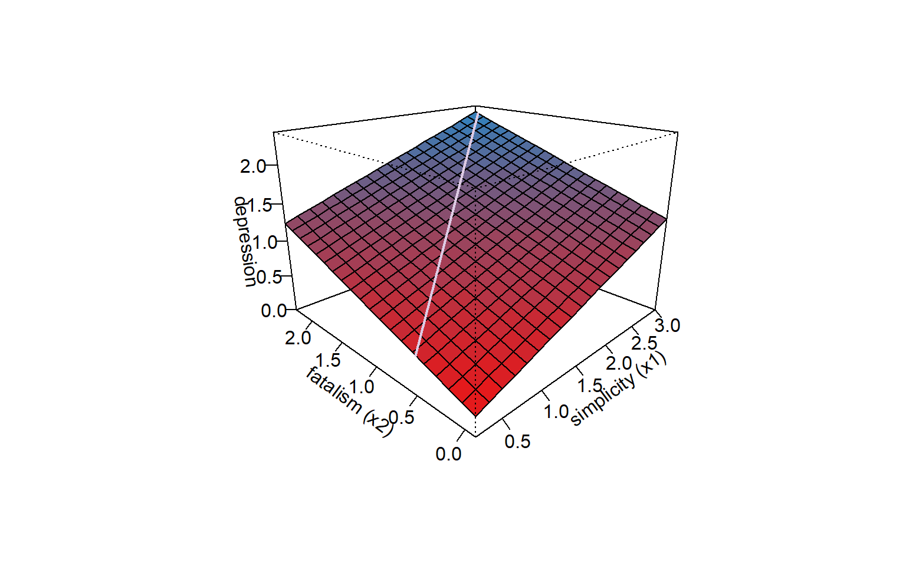
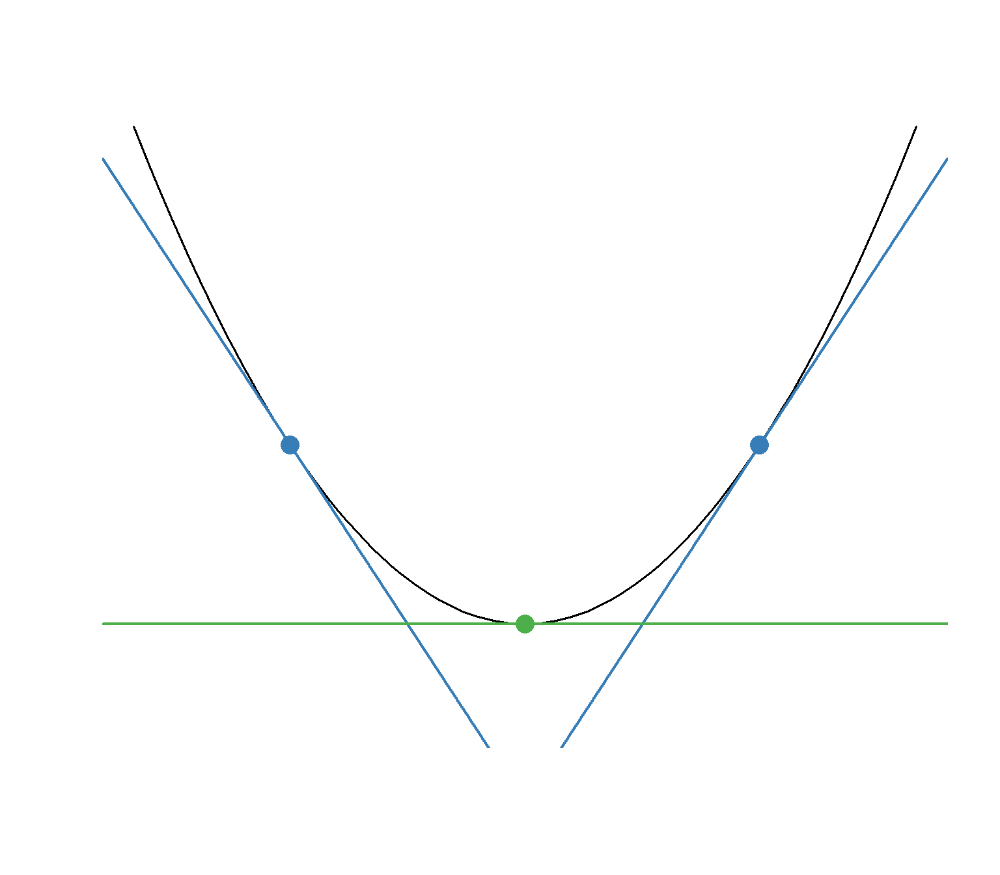
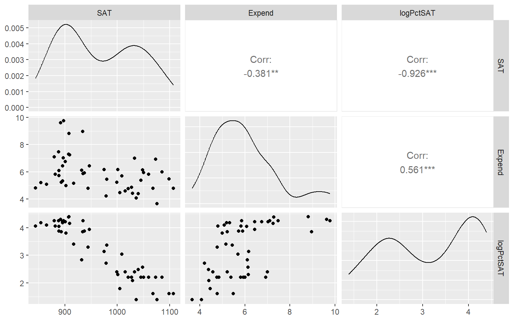
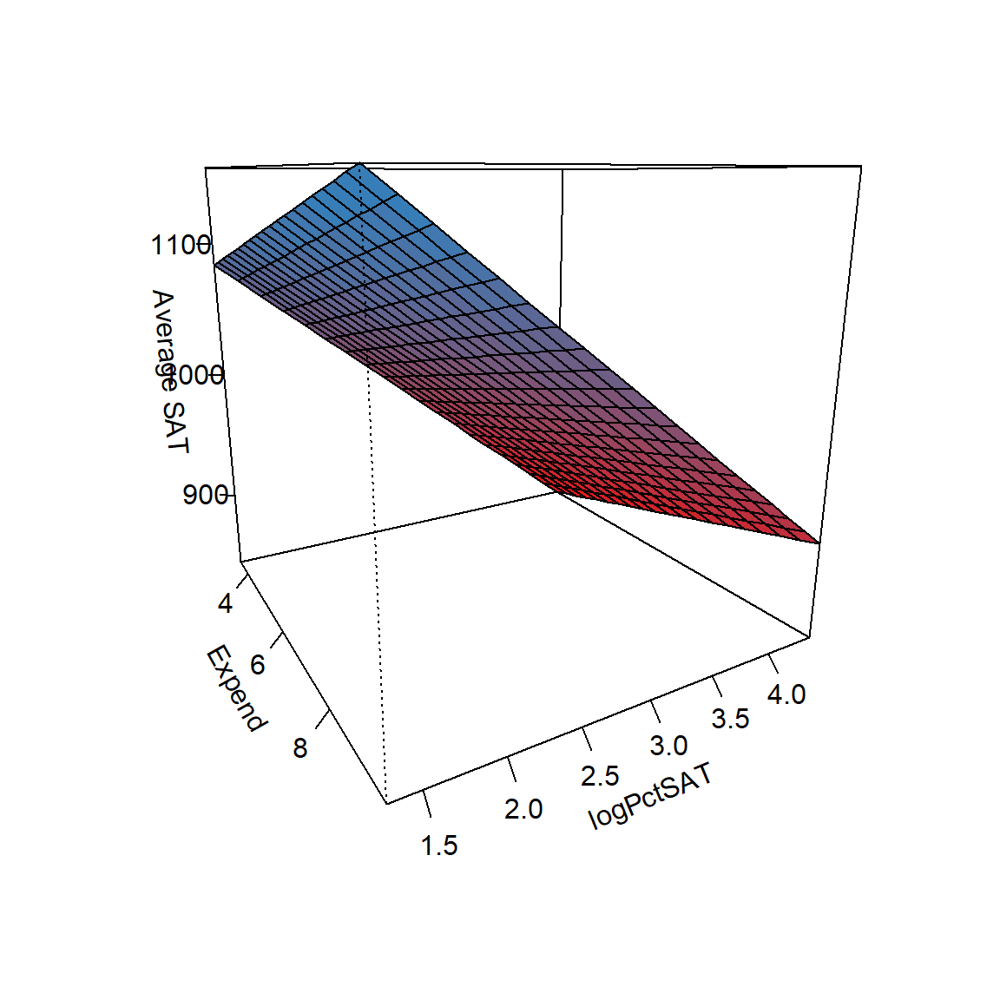

Lecture 16: One Way ANOVA
Jargon Refresher
Linear Model:
\[{\color{blue}y_i} = \beta_0 + \sum_{p=1}^P \beta_p {\color{red}x_{ip}} + \epsilon_i\]
Left side variable terms
- \(y\)
- Dependent variable (DV)
- Outcome variable
- Response variable
Right side variable terms
- \(x\)
- Independent variable(s) (IVs)
- Predictor variable(s)
Tests We Will Cover
| IV(s) | DV | IV Status | Model Structure |
|---|---|---|---|
| — | One categorical | — | \(\chi^2\) Goodness of Fit |
| One Categorical | One categorical | — | \(\chi^2\) Test of Independence |
| — | One Continuous | — | One Sample \(t\)-Test |
| One Binary | One Continuous | Dependent Groups | Paired Sample \(t\)-Test |
| One Binary | One Continuous | Independent Groups | Independent Sample \(t\)-Test |
| One Categorical | One Continuous | Independent Groups | One-Way ANOVA |
| More than One Categorical | One Continuous | Independent Groups | Factorial ANOVA |
| One Categorical | One Continuous | Dependent Groups | One-Way Repeated Measures ANOVA |
| More than One Categorical | One Continuous | Dependent Groups | Factorial Repeated Measures ANOVA |
| More than One Categorical | One Continuous | Mixed Groups | Mixed ANOVA |
| One Continuous | One Continuous | — | Correlation or Simple Regression |
| More than One Continuous | One Continuous | — | Multiple Regression |
More than two variables
Many research studies aim to establish a relationship between multiple continuous variables.
Often, there is one criterion (response) variable, and several predictor variables.
One common conceptual example is that we may want to understand the effect of a particular predictor of interest, but also “control” or “account” for the effects of third variables
We can do this using multiple linear regression
BUT…
What does it mean to “take into account” a third variable?
How does this affect our interpretations?
What are the limitations of this approach?
Multiple Regression
Multiple linear regression is a popular method that allows us to estimate the relationship between a single response variable and multiple predictors
Multiple linear regression equations:
\[\hat{y} = \beta_0 + \beta_1x_1 +\cdots + \beta_px_p \ \ \text{(population prediction)}\\ y = b_0 + \beta_1x_1 + \cdots + \beta_px_p + \epsilon \ \ \text{(population points)}\\ \hat{y} = b_0 + b_1x_1 + \cdots + b_px_p \ \ \text{(sample prediction)} \\ y = b_0 + b_1x_1 + \cdots + b_px_p + e \ \ \text{(sample points)}\]
\(p\) is the number of predictors (continuous IVs)
\(x_1, \ldots, x_p\) are predictor variables
\(\beta_0, \ldots, \beta_p\) are population regression coefficients
\(y\): observed criterion value (continuous)
\(\hat{y}\): predicted criterion value
\(\epsilon = y - \hat{y}\): model residuals
\(b_0, \ldots b_p\) are estimated regression coefficients
Example
Psychiatric patients hospitalized for depression were measured on the following variables:
simplicity (s): higher scores = higher need to see the world in black-and-white
fatalism (f): higher scores = greater belief that events are inevitable and we are powerless to change the future
depression (d): Beck’s self-report scale, higher scores = greater depression
All variables scaled to have mean 1 and standard deviation .5
Do simplicity and fatalism scores predict depression? What do you think?
Using What We Know
We learned that the normal equations in single variable regression were
\[\hat{b}_1 = \frac{s_{xy}}{s^2_{x}}\]
\[\hat{b}_0 = \bar{y} - \hat{b}_1 \bar{x}\]
In these data
\(s_{s, d} = 0.161\)
\(s_{f, d} = 0.164\)
\(s^2_s = 0.250\)
\(s^2_f = 0.250\)
\(\bar{d} = \bar{s} = \bar{f} = 1.00\)
Plugging In
So we could try something like
\[\hat{b}_1 = \frac{s_{s, d}}{s^2_{d}} = \frac{0.161}{0.250}= 0.644\]
\[\hat{b}_2 = \frac{s_{f, d}}{s^2_{d}} = \frac{0.164}{0.250}= 0.656\]
\[\hat{b}_0 = \bar{y} - \hat{b}_1 \bar{s} - \hat{b}_2 \bar{f} = 1 - (0.644)(1) - (0.656)(1) = -0.3\]
Giving us
\[d = -0.3 + 0.644s + 0.656f + e\]
Why might we NOT like this approach?
What piece of information do we know from these data that we are not making use of here?
Do you think there is no correlation between simplicity and fatalism?
More than two variables
Whenever we deal with more than two variables, we need to consider all possible inter-relationships.
We can look at the bivariate associations between all variables by looking at the covariance or correlation matrix. We can also visualize bivariate relationships with a pairs plot, aka a scatterplot matrix
- bivariate - as pertaining to a given pair of variables (ignoring the others)
- matrix - an array of rows and columns (sort of a fancy word for a table, but with some special implications)
Scatterplot Matrix

Correlation Matrix
What do you notice?
- There are strong relationships between both predictors and the response, \(r_{s,d} = .643\) and \(r_{f, d} = .667\)
- However, there is also a strong correlation between both predictors, \(r_{s, f} = 0.631\)
- The strong relationship between \(s\) and \(f\) means some of what we see in \(r_{s,d}\) might also be shared by what we’re seeing in \(r_{f, d}\), and vice versa.
Multiple Correlations

Correlations in Regression
Summary of the Venn diagram:
- Each predictor may add some unique ability to predict the outcome
- Predictors often share some ability to predict the outcome
Implications:
\(R\)-square (\(R^2\)) is the proportion of variance of the outcome accounted for by the predictors
In the Venn diagram, \(R^2\) is the proportion of the \(y\) circle that overlaps with any other circle
In multiple regression, \(R^2\) usually doesn’t equal the sum of the proportion of variance accounted for by each predictor, because they also overlap with each other
\(R^2\)
- In the Venn diagram, \(R^2\) is the proportion of the \(y\) circle that overlaps with any other circle

Bivariate Pearson Correlation
The ordinary Pearson correlation, \(r_{y, x_1}\), ignores the existence of \(x_2\):
\(r_{y, x_1} = \frac{s_{y, x_1}}{\sqrt{s_{y}^2} \sqrt{s_{x_1}^2}}\)
- \(s_{y, x_1}\): sample covariance of \(y\) and \(x_1\)
- \(s_{y}^2\): sample variance of \(y\)
- \(s_{x_1}^2\): sample variance of \(x_1\)
Bivariate Visual

Partial Correlation
The partial correlation gives the extent to which the part of \(x_1\) that is independent of \(x_2\) correlates with the part of \(y\) that is independent of \(x_2\):
Squared partial correlation:
- extent to which \(x_1\) predicts the proportion of variance in \(y\) that is not predicted by \(x_2\)
Partial Correlation
“Partialing out”: another way to say “controlling for” or “adjusting for”
For the partial correlation of \(y\) with \(x_1\), controlling for \(x_2\), fit two models:
\[\text{Model 1: } y = b_0 + b_1x_2 \\ \text{Model 2: } x_1 = b_0 + b_1x_2\]
Partial correlation:
\[r_{y, x_1 . x_2} = \text{cor}(\hat{e}_{y \cdot x_2}, \hat{e}_{x_1 \cdot x_2}) = \text{cor}(\overbrace{y - \hat{y}}^{\text{Model 1 residuals}}, \overbrace{x_1 - \hat{x}_1}^{\text{Model 2 residuals}})\]
- Equals the correlation between two sets of residuals:
- Residuals of Model 1: the portion of \(y\) independent of \(x_2\)
- Residuals of Model 2: the portion of \(x_1\) independent of \(x_2\)
Partial Correlation
Other formulations of the partial correlation:
\[r_{y, x_1 . x_2} = \frac{r_{y, x_1} - r_{y, x_2}r_{x_1, x_2}}{\sqrt{1 - r^2_{y, x_2}}\sqrt{1 - r^2_{x_1, x_ 2}}}\]
\[r^2_{y, x_1 . x_2} = \frac{(R^2 \text{ of } y \text{ predicted by both } x_1 \text{ and } x_2) - (R^2 \text{ of } y \text{ predicted by } x_2)}{1 - R^2 \text{ of } y \text{ predicted by } x_2}\]
Partial Visual

Partial Correlations in R
the ppcor package can give us a partial correlation matrix
Partial correlations of simplicity, fatalism, and depression
Interpretation: relationship between simplicity controlling for fatalism and depression controlling for fatalism is \(r_{d, s . f} = 0.391\)
For the partial correlation, fatalism is partialed out of both simplicity and depression.
Squared partial correlation:
- Extent to which \(x_1\) predicts the proportion of variance in \(y\) that is not predicted by \(x_2\)
- Proportion of the residual variation of \(y\) not accounted for by \(x_2\), but accounted for by \(x_1\)
Semi-Partial Correlation
The semi-partial correlation gives the extent to which the part of \(x_1\) that is independent of \(x_2\) correlates with \(y\):
Squared semi-partial correlation:
- proportion of variance in \(y\) that is uniquely predicted by \(x_1\), beyond \(x_2\)
For the semi-partial correlation of \(y\) with \(x_1\), controlling for \(x_2\), fit two models:
\[\text{Model 1: } y = b_0 + b_1x_1 + b_2x_2 \\ \text{Model 2: } y = b_0 + b_1x_2\]
The semi-partial correlation is the root difference in \(R^2\) from the two models
- Sometimes also called the “part correlation” (annoying, I know)
Formulations
Semi-partial correlation:
\[r_{y(x_1. x_2)} = \pm\sqrt{R^2_{\text{Model 1}} - R^2_{\text{Model 2}}}\]
Other formulation for the semi-partial correlation:
\[r_{y(x_1. x_2)} = \frac{r_{y, x_1} - r_{y, x_2}r_{x_1, x_2}}{\sqrt{1 - r^2_{x_1, x_2}}}\]
- This equation gives the correct sign of the semi-partial correlation
Semi-Partial Correlations in R
Notice: this correlation matrix is not symmetrical. The row variable can be thought of as a the predictor (\(x\)) and column variable as the response/criterion (\(y\))
Interpretation: relationship between simplicity controlling for fatalism and depression is \(r_{d, (s . f)} = 0.303\)
For the semi-partial correlation, fatalism is partialed out of only simplicity but not depression.
Semi Visual

The Three Types of Correlations
Bivariate Pearson correlation (\(r_{y, x_1}\)) measures the proportion of total variance in \(y\) that is accounted for by \(x_1\), ignoring \(x_2\)
Partial correlation (\(r_{y, x_1.x_2}\)) measures the proportion of residual variance in \(y\) (after accounting for \(x_2\)) that is accounted for by \(x_1\)
Semi-partial correlation (\(r_{y(x_1.x_2)}\)) measures the proportion of total variance in \(y\) that is accounted for by \(x_1\) but not by \(x_2\)
Moving to Regression Land
Last week we learned how the Bivariate Pearson correlation could be considered a building block for single-variable regression.
Which of these do you think we’ll use as the building block of multiple regression?
- Semi-partial correlation
- This is the relationship we are interested in multiple regression: understanding how variability in different predictors accounts for the total variability in a response variable, while accounting for the shared variability between the predictors
So how do we formulate it as a regression equation?
Example
Fitted model:
\[\widehat{\text{depression}} = .20 + .38\times \text{simplicity} + .42\times \text{fatalism}\]
How do we interepret the different values in this equation?
.20 is the predicted level of depression when simplicity = 0 and fatalism = 0
.38 is the predicted increase in mean depression for a one-unit (2 \(SD\)) increase in simplicity, holding fatalism constant
.42 is the predicted increase in mean depression for a one-unit (2 \(SD\)) increase in fatalism, holding simplicity constant
We might refer to \(\widehat{\text{depression}}\) as the linear predictor, which is a composite of the information given by all of the predictors together, in which case we want to minimize \(\sum e^2\) in
\[depression = \widehat{\text{depression}} + e\]
The Regression Plane
The Regression Plane
The Regression Plane
Interpreting Regression Coefficients
\[\hat{b}_2 = .42 =\]
predicted increase in depression for a one-unit increase in fatalism, holding simplicity constant
\[\hat{b}_1 = .38 =\]
predicted increase in depression for a one-unit increase in simplicity, holding fatalism constant
- In reality, simplicity and fatalism are positively correlated, so it may be unrealistic to increase one variable and not the other
- In this example, a one-unit increase in simplicity is associated with an increase in fatalism, so this picture may be more realistic
The Regression Plane

Power and Reponsibility
Multiple regression allows for correlated predictors
- Advantage: highly flexible model, applies to many contexts
- Disadvantages: easy to misinterpret, does not allow for causal inference about individual predictors (or causal inference at all)
Fitting the Model
By fitting the regression model, we obtain estimates of \(b_0, b_1, \ldots, b_p\)
As with simple linear regression, we usually use the method of ordinary least squares (OLS)
Recall: for simple linear regression, we find \(b_0\) and \(b_1\) that minimize:
\[sum_{i = 1}^N[y_i - \hat{y}_i]^2 \\ = \sum_{i = 1}^N[y_i - (b_0 + b_1x_i)]^2\]
For multiple linear regression, we find \(b_0, b_1, \ldots, b_p\) that minimize: \[\sum_{i = 1}^N(y_i - \hat{y})^2 = \sum_{i = 1}^Ne^2\]
Where
\[\hat{y} = (b_0 + b_1x_{1i} + b_2x_{2i} + \cdots + b_px_{pi})\]
Two Predictors
For the (relatively) simple two-predictor case,
\[\hat{b}_1 = \frac{s_{y, x_1} s^2_{x_2} - s_{x_1, x_2}s_{y, x_2}}{s_{x_1}^2s_{x_2}^2 - s^2_{x_1, x_2}}\]
\[\hat{b}_2 = \frac{s_{y, x_2} s^2_{x_1} - s_{x_1, x_2}s_{y, x_1}}{s_{x_1}^2s_{x_2}^2 - s^2_{x_1, x_2}}\]
\[\hat{b}_0 = \bar{y} - \hat{b}_1\bar{x}_1 - \hat{b}_2\bar{x}_2\]
Properties and Extensions
Notice: estimated regression coefficients are functions of the variances and covariances among the variables, including the covariances between predictors
BUT:
- These equations are not very intuitive
- Equations only get more complicated with more predictors
A matrix formula makes it easier to illustrate what’s going on
- We need matrix operations (go review if necessary!)
Matrix Equations
\[\mathbf{y}_{N\times 1} = \begin{bmatrix}y_{1}\\ y_{2}\\ \vdots\\ y_{N} \end{bmatrix} \qquad \mathbf{X}_{N\times(p+1)} = \begin{bmatrix}1 & x_{1,1} & \cdots & x_{p,1}\\ 1 & x_{1,2} & \cdots & x_{p,2}\\ \vdots & \vdots & \ddots & \vdots\\ 1 & x_{1,N} & \cdots & x_{p,N} \end{bmatrix} \qquad \hat{\mathbf{b}}_{(p+1)\times 1} = \begin{bmatrix}\hat{b}_{0}\\ \hat{b}_{1}\\ \vdots\\ \hat{b}_{p} \end{bmatrix}\]
First column of \(\mathbf{X}\) is 1’s and corresponds to the intercept
One column per predictor
Equation for multiple regression coefficients:
\[\hat{\mathbf{b}} = (\mathbf{X}^T\mathbf{X})^{-1}\mathbf{X}^T\mathbf{y}\]
Equations Con’t
Matrix algebra in the context of regression:
\(\mathbf{y}\) is a vector of response variable scores
\(\mathbf{X}\) is an \(N\times (p+1)\) matrix of predictors
- \(p+1\) to account for the intercept
Equations Example
Simple example:
\[\mathbf{y} = \begin{bmatrix}1\\ 2\\ 3\\ 4 \end{bmatrix} \qquad \mathbf{X} = \begin{bmatrix}1 & 4 & 3\\ 1 & 2 & 1\\ 1 & 3 & 2\\ 1 & 1 & 4 \end{bmatrix}\]
- Column 1 of \(\mathbf{X}\): Intercept “predictor” (all 1s)
- Column 2 of \(\mathbf{X}\): \(x_1\)
- Column 3 of \(\mathbf{X}\): \(x_2\)
Example Con’t
\[\mathbf{X}^{T}\mathbf{X} = \begin{bmatrix}1 & 1 & 1 & 1\\ 4 & 2 & 3 & 1\\ 3 & 1 & 2 & 4 \end{bmatrix}\begin{bmatrix}1 & 4 & 3\\ 1 & 2 & 1\\ 1 & 3 & 2\\ 1 & 1 & 4 \end{bmatrix} = \begin{bmatrix}4 & 10 & 10\\ 10 & 30 & 24\\ 10 & 24 & 30 \end{bmatrix}\]
\[(\mathbf{X}^{T}\mathbf{X})^{-1} = \begin{bmatrix}3.3750 & -0.6250 & -0.6250\\ -0.6250 & 0.2083 & 0.0417\\ -0.6250 & 0.0417 & 0.2083 \end{bmatrix}\]
\[\mathbf{X}^{T}\mathbf{y} = \begin{bmatrix}1 & 1 & 1 & 1\\ 4 & 2 & 3 & 1\\ 3 & 1 & 2 & 4 \end{bmatrix}\begin{bmatrix}1\\ 2\\ 3\\ 4 \end{bmatrix} = \begin{bmatrix}10\\ 21\\ 27 \end{bmatrix}\]
\[(\mathbf{X}^{T}\mathbf{X})^{-1}\mathbf{X}^{T}\mathbf{y} = \begin{bmatrix}3.3750 & -0.6250 & -0.6250\\ -0.6250 & 0.2083 & 0.0417\\ -0.6250 & 0.0417 & 0.2083 \end{bmatrix}\begin{bmatrix}10\\ 21\\ 27 \end{bmatrix} = \begin{bmatrix}3.75\\ -0.75\\ 0.25 \end{bmatrix} = \begin{bmatrix}\hat{b}_0\\ \hat{b}_1\\ \hat{b}_2 \end{bmatrix}\]
Insights from the Matrix Equations
The interactions among all predictors affects every estimated regression coefficient
This equation can break down!
- If \((\mathbf{X}^T\mathbf{X})\) cannot be inverted, we say it is singular
- Will be singular if one (linear combination of) predictor(s) is exactly the same as another (linear combination of) predictor(s)
- Regression coefficients cannot be uniquely estimated if they are redundant in this way
Singularity
Deriving the Equations
The matrix equations give us the ordinary least squares (OLS) result
This means that \(\hat{\mathbf{b}}\) minimizes the sum of squared residuals:
\[\sum_i e_i^2 = \sum_i (y_i - \hat{y}_i)^2 = (\mathbf{y} - \hat{\mathbf{y}})^T(\mathbf{y} - \hat{\mathbf{y}})\]
Solved using calculus:
Find the first derivative of \((\mathbf{y} - \hat{\mathbf{y}})^T(\mathbf{y} - \hat{\mathbf{y}})\) with respect to \(\mathbf{b}\)
Set equal to 0
Solve for \(\mathbf{b}\)

The 1st derivative gives the slope of the tangent line and equals zero at the function minimum.
Derivation Examples
I’ll derive these equations for three cases:
Single variable
\[\hat{\mathbf{y}} = b\mathbf{x}\]
Multiple variables
\[\hat{\mathbf{y}} = \mathbf{X}\mathbf{b}\]
Standardized variables
\[\hat{\mathbf{z}}_{\mathbf{y}} = \mathbf{Z}_{\mathbf{x}}\mathbf{b}^\star\]
Want to minimize:
\[\begin{aligned} (\mathbf{y} - \hat{\mathbf{y}})^T &(\mathbf{y} - \hat{\mathbf{y}}) \\ (\mathbf{y} - b\mathbf{x})^T &(\mathbf{y} - b\mathbf{x}) \\ \mathbf{y}^T\mathbf{y} - 2b\mathbf{x}^T &\mathbf{y} + b^2\mathbf{x}^T\mathbf{x} \end{aligned}\]
\[\begin{aligned} (\mathbf{y} - \hat{\mathbf{y}})^T & (\mathbf{y} - \hat{\mathbf{y}}) \\ (\mathbf{y} - \mathbf{X}\mathbf{b})^T & (\mathbf{y} - \mathbf{X}\mathbf{b}) \\ \mathbf{y}^{T}\mathbf{y} - 2\mathbf{b}^{T}\mathbf{X}^{T} &\mathbf{y} + \mathbf{b}^{T}\mathbf{X}^{T}\mathbf{X}\mathbf{b} \end{aligned}\]
\[\begin{aligned} (\mathbf{z}_{\mathbf{y}} - \hat{\mathbf{z}}_{\mathbf{y}})^T & (\mathbf{z}_{\mathbf{y}} - \hat{\mathbf{z}}_{\mathbf{y}}) \\ (\mathbf{z}_{\mathbf{y}} - \mathbf{Z}_{\mathbf{x}}\mathbf{b}^\star)^T & (\mathbf{z}_{\mathbf{y}} - \mathbf{Z}_{\mathbf{x}}\mathbf{b}^\star) \\ \mathbf{z}_{\mathbf{y}}^T\mathbf{z}_{\mathbf{y}} - 2(N-1) &\mathbf{b}^{\star T}\mathbf{r}_{\mathbf{xy}} + \\ (N-1) &\mathbf{b}^{\star T}\mathbf{R}_{\mathbf{xx}}\mathbf{b}^\star \end{aligned}\]
\(\mathbf{R}_{\mathbf{xx}} = \frac{1}{N-1}\mathbf{Z}_{\mathbf{x}}^T\mathbf{Z}_{\mathbf{x}}\) is a \(p\times p\) matrix of correlations among predictors
\(\mathbf{r}_{\mathbf{xy}} = \frac{1}{N-1}\mathbf{Z}_{\mathbf{x}}^T\mathbf{z}_{\mathbf{y}}\) is a vector of correlations among predictors and the criterion
Derivations Con’t
From the previous slide, we want to minimize:
For a single variable:
\[\mathbf{y}^T\mathbf{y} - 2b\mathbf{x}^T\mathbf{y} + b^2\mathbf{x}^T\mathbf{x}\]
For multiple variables:
\[\mathbf{y}^{T}\mathbf{y} - 2\mathbf{b}^{T}\mathbf{X}^{T}\mathbf{y} + \mathbf{b}^{T}\mathbf{X}^{T}\mathbf{X}\mathbf{b}\]
For standardized variables:
\[\begin{aligned} &\mathbf{z}_{\mathbf{y}}^T\mathbf{z}_{\mathbf{y}} - 2(N-1)\mathbf{b}^{\star T}\mathbf{r}_{\mathbf{xy}} + \\ &(N-1)\mathbf{b}^{\star T}\mathbf{R}_{\mathbf{xx}}\mathbf{b}^\star \end{aligned}\]
Take the first derivative with respect to \(b\) or \(\mathbf{b}\) and set equal to 0:
\[\begin{aligned} -2\mathbf{x}^T\mathbf{y} + 2b\mathbf{x}^T\mathbf{x} &= 0 \\ 2b\mathbf{x}^T\mathbf{x} &= 2\mathbf{x}^T\mathbf{y} \\ b \sum x^2 &= \sum xy \\ \hat{b} &= \frac{\sum xy}{\sum x^2} \end{aligned}\]
\[\begin{aligned} -2\mathbf{X}^{T}\mathbf{y} + 2\mathbf{X}^{T}\mathbf{X}\mathbf{b} &= 0 \\ 2\mathbf{X}^{T}\mathbf{X}\mathbf{b} &= 2\mathbf{X}^{T}\mathbf{y} \\ (\mathbf{X}^{T}\mathbf{X})^{-1}(\mathbf{X}^{T}\mathbf{X})\mathbf{b} &= (\mathbf{X}^{T}\mathbf{X})^{-1}\mathbf{X}^{T}\mathbf{y} \\ \hat{\mathbf{b}} &= (\mathbf{X}^{T}\mathbf{X})^{-1}\mathbf{X}^{T}\mathbf{y} \end{aligned}\]
\[\begin{aligned} -2(N-1)\mathbf{r}_{\mathbf{xy}} + 2(N-1)\mathbf{R}_{\mathbf{xx}}\mathbf{b}^\star &= 0 \\ 2(N-1)\mathbf{R}_{\mathbf{xx}}\mathbf{b}^\star &= 2(N-1)\mathbf{r}_{\mathbf{xy}} \\ \mathbf{R}_{\mathbf{xx}}^{-1}\mathbf{R}_{\mathbf{xx}}\mathbf{b}^\star &= \mathbf{R}_{\mathbf{xx}}^{-1}\mathbf{r}_{\mathbf{xy}} \\ \hat{\mathbf{b}}^\star &= \mathbf{R}_{\mathbf{xx}}^{-1}\mathbf{r}_{\mathbf{xy}} \end{aligned}\]
Standardized Coefficients
From the previous slide, we see that if variables are standardized
\[\hat{\mathbf{b}}^\star = \mathbf{R}_{\mathbf{xx}}^{-1}\mathbf{r}_{\mathbf{xy}}\]
\(\hat{\mathbf{b}}^\star\) is a function entirely of the correlations among predictors (\(\mathbf{R}_{\mathbf{xx}}\)) and the correlations of the predictors with the criterion \(\mathbf{r}_{\mathbf{xy}}\)
After we invert \(\mathbf{R}_{\mathbf{xx}}\), every element of the resulting matrix \(\mathbf{R}_{\mathbf{xx}}^{-1}\) is a function of all predictor intercorrelations
Standardized regression coefficients are denoted \(\hat{b}^\star_1, \ldots, \hat{b}^\star_p\)
\(\hat{b}^\star_1\) is the predicted change in \(z_y\) (in standard deviation units) associated with increasing \(z_1\) by one standard deviation, holding all other predictors constant
The standardized model does not require an intercept parameter (\(\hat{b}_0^\star = 0\))
For any predictor \(i\),
\[\hat{b}_i = \hat{b}^\star_i \frac{s_y}{s_{x_i}}\]
Regression in R
Another example: predicting average SAT scores from educational expenditures
50 observations (one for each U.S. state)
Data from the 1994-1995 school year
First, we can fit the simple linear regression model reflecting the primary relationship of interest (coef returns the estimated coefficients)
\[\widehat{\text{SAT}} = 1089.29 - 20.89\times \text{Expend}\]
Does this makes sense? Increased spending associated with a decrease in average SAT scores?
What Happened?
This unexpected result occurs because a third variable—the proportion of students who take the SAT—mitigates the relationship between average SAT scores and educational expenditures
States with higher expenditures have higher rates of SAT test-taking
Average SAT scores are higher in states with low rates of SAT test-taking
I used log(PctSAT) is to improve linearity
Correlations among variables:
Scatterplot Matrix

Distorters
Adding logPctSAT as a predictor, we find:
Resulting in:
\[\widehat{\text{SAT}} = 1147.113 + 11.130 \times \text{Expend} - 78.205 \times \text{logPctSAT}\]
Controlling for logPctSAT, the coefficient for Expend is positive
logPctSATis a distorter variable
Standardized Regression Coefficients
The scale() function in R standardizes variables:
Intercept must equal zero
For a one standard deviation increase in Expend, we expect average SAT scores to increase by .2027 standard deviations, holding
logPctSATconstantFor a one standard deviation increase in
logPctSAT, we expect average SAT scores to decrease by 1.04 standard deviations, holding Expend constant
SAT Plane

Types of Third Variables
Types of relationships a third variable (\(z\)) can have with a DV (\(y\)) and IV (\(x\)):
Confounder
\(z\) is related to both \(x\) and \(y\)
The relationship between \(x\) and \(y\) changes when accounting for \(z\)
Distorter
\(z\) changes the sign of the relationship between \(x\) and \(y\)
\(z\) changes a zero relationship between \(x\) and \(y\) to a nonzero relationship
Can be specific type of confounder (as in our example)
More Third Variables
Suppressor
- Like a confounder, but \(z\) is unrelated to \(y\)
Mediator
\(x\) causes \(y\)
\(z\) is intermediate in the causal process
Moderator
- The relationship between \(x\) and \(y\) changes across levels of \(z\)
We’ll discuss mediation and moderation more later in the semester
R-Squared
In simple linear regression, \(R^2 = r_{xy}^2 = \text{cor}(x, y)^2 = \text{cor}(y, \hat{y})^2\)
In multiple linear regression, \(R^2 = \text{cor}(y, \hat{y})^2\)
\(R^2\) indicates the proportion of variance in \(\hat{y}\) accounted for by the model
- i.e., accounted for by the linear combination of predictors
Information including \(R^2\) is printed at the bottom of the summary output
Call: lm(formula = SAT ~ Expend + logPctSAT, data = dat)
Residuals: Min 1Q Median 3Q Max
-61.510 -13.586 -2.587 16.562 54.932 Coefficients:
Estimate Std. Error t value Pr(>|t|)
(Intercept) 1147.113 16.700 68.69 < 2e-16 ***
Expend 11.130 3.264 3.41 0.00134 **
logPctSAT -78.205 4.471 -17.49 < 2e-16 *** ---
Signif. codes:
0 '***' 0.001 '**' 0.01 '*' 0.05 '.' 0.1 ' ' 1
Residual standard error: 25.78 on 47 degrees of freedom
Multiple R-squared: 0.8861, Adjusted R-squared: 0.8813
F-statistic: 182.9 on 2 and 47 DF, p-value: < 2.2e-16 This means that 89% of the variance in average SAT scores is associated with these two variables!
Adjusted R-Squared
Adding more predictors necessarily increases \(R^2\)
The obtained \(R^2\) is an overestimate of the population \(R^2\)
Capitalizes on unreliable/nonreplicable patterns in the data
\[\text{Adjusted } R^2 = \left(R^2 - \frac{p}{N-1}\right)\left(\frac{N-1}{N-p-1}\right)\]
\(p\): number of predictors
\(N\): sample size
Adjusted \(R^2\) is not completely unbiased (Darlington, 1990, p. 122), but it is less biased than \(R^2\) and is commonly used
Adjusted \(R^2\) does not necessarily increase with more predictors
\(R^2 \geq 0\), but adjusted \(R^2\) can be slightly negative
Omnibus Test: R-Squared
We may want to know whether \(R^2\) is significantly greater than zero
\[H_0: R^2 = 0 \hspace{2cm} H_1: R^2 > 0\]
\[F(p, N - p - 1) = \frac{MS_{\text{regression}}}{MS_{\text{residual}}} = \frac{SS_{\text{regression}} / p}{SS_{\text{residual}} / (N - p - 1)}\\ = \frac{(N - p - 1) R^2}{p(1 - R^2)}\]
\[SS_{\text{regression}} = \sum(\hat{y} - \bar{y})^2 = \text{ variation in } y \text{ accounted by predictors} \\ SS_{\text{residual}} = \sum(y - \hat{y})^2 = \text{ variation of residuals}\]
\(N\): sample size
\(p\): number of predictors
Under \(H_0\), the \(F\) statistic follows an \(F\) distribution with \(p\) and \(N - p - 1\) degrees of freedom
Testing Coefficients
We can also test individual regression coefficients
For \(j = 0, \ldots, p\)
\[H_0: \,b_j = 0 \\ H_1: \,b_j \neq 0\]
Even though most software reports the test for all coefficients, the test for the intercept \(b_0\) is usually not interesting
Hypothesis tests of whether each population coefficient might be equal to zero (effectively dropping the term from the model) if the other predictors are held constant
Testing Con’t
Test whether regression coefficients are different than zero (two predictors):
\[H_0: b_1 = 0 \hspace{2cm} H_1: b_1 \neq 0\]
- \(b_1\) is the population partial regression coefficient of \(x_1\) predicting \(y\)
Test statistic:
\[t(df) = \frac{\hat{b}_1}{s_{\hat{b}_1}} \hspace{2cm} s_{\hat{b}_1} = \frac{s_y}{s_1}\sqrt{\frac{1-R^2}{N-p-1}}\sqrt{\frac{1}{1-r^2_{x_1,x_2}}}\]
\(df\): degrees of freedom \(= N - p - 1\)
\(s_y\): sample standard deviation of \(y\)
\(s_{x_1}\): sample standard deviation of \(x_1\)
\(R^2\): (unadjusted) coefficient of determination for regression model
\(r_{x_1,x_2}\): sample correlation between \(x_1\) and \(x_2\)
\(N\): sample size
\(p\): number of predictors
For more than two predictors, standard error calculations are more complicated
Confidence Intervals
Confidence interval limits for \(b_1\):
\[\hat{b}_1 \pm t(df)_{\alpha/2}s_{\hat{b}_1}\]
Call:
lm(formula = SAT ~ Expend + logPctSAT, data = dat)
Residuals:
Min 1Q Median 3Q Max
-61.510 -13.586 -2.587 16.562 54.932
Coefficients:
Estimate Std. Error t value Pr(>|t|)
(Intercept) 1147.113 16.700 68.69 < 2e-16 ***
Expend 11.130 3.264 3.41 0.00134 **
logPctSAT -78.205 4.471 -17.49 < 2e-16 ***
---
Signif. codes:
0 '***' 0.001 '**' 0.01 '*' 0.05 '.' 0.1 ' ' 1
Residual standard error: 25.78 on 47 degrees of freedom
Multiple R-squared: 0.8861, Adjusted R-squared: 0.8813
F-statistic: 182.9 on 2 and 47 DF, p-value: < 2.2e-16CI for Expend: \(11.130 \pm 2.012 \times 3.264 = [4.56, 17.70]\)
Confidence Intervals in R
Hypothesis Testing: Regression Coefficients
These hypothesis tests are interpreted by treating other variables as constant
If variables are correlated, these can be easily misinterpreted
For the quadratic model,
\[\hat{y} = b_0 + b_1x_1 + b_2x_1^2\]
we cannot interpret significance test for \(b_2\) because we cannot increase \(x_1^2\) by one unit without also changing \(x_1\)
Simulation Example
Suppose \(x_1\), \(x_2\), and \(x_3\) all correlate .3 with each other (in the population), \(x_1\) and \(x_2\) correlate .3 with \(y\), and
How often will the \(\hat{b}_3\) coefficient be significantly different than 0?
19% is way more than my \(\alpha = .05\) for a true null! Is the null \(\beta_3 = 0\) true?
What happened?
A correlation \(\rho_{xy}\) can be 0 in the population while a regression coefficient \(\beta_{x}\) might not be!
If the predictor \(x\) is correlated with other predictors in the model, that correlation gets “partialed out”
What’s left in \(x_3\) after taking what’s shared with \(x_1\) and \(x_2\) out might not be independent of \(y\)!
Simulation Example
In the example on the previous slide,
\[\rho_{xx}=\begin{bmatrix}1 & .3 & .3\\ .3 & 1 & .3\\ .3 & .3 & 1 \end{bmatrix}\,\,\,\,\rho_{xy}=\begin{bmatrix}.3\\ .3\\ 0 \end{bmatrix}\]
Reason that we often reject the null hypothesis for \(\hat{b}_3\)? Population \(b_3 \neq 0\)
Even though \(\rho_{x_1, y} = 0\), because \(\rho_{x_1, x_3} \neq 0\), \(\rho_{x_2, x_3} \neq 0\), \(\rho_{x_2, y} \neq 0\), and \(\rho_{x_3, y} \neq 0\), once we account for \(x_2\) and \(x_2\), then we see that \(x_1\) and \(y\) are not (linearly) independent.
WARNING
Two Scenarios
- When looking at the relationship between ice cream sales and murder rate, should you also factor in temperature outside?

Two Scenarios
- When looking at the relationship between player height and points per game (PPG) in the NBA, should you control for the player’s draft position?

Two Scenarios
When looking at the relationship between ice cream sales and murder rate, should you also factor in temperature outside?
- YES! The is a classic confounder example. Without including outside temperature, you may find a positive relationship between ice cream sales and murder rate, but that could be because outside temperature causes both variables
When looking at the relationship between player height and points per game (PPG) in the NBA, should you control for the player’s draft position?
- PROBABLY NOT! Player height may be a major determining factor draft position to begin with, meaning the unshared relationship between height and PPG may look totally wrong if you control for draft position.
Model Selection
Model building using regression is an art:
We should include (“control for”) theoretically relevant predictors
We should make sure we’re including confounds, not not suppressors
But we should also strive for the simplest model possible
Don’t want to include redundant (or nearly redundant) predictors
BOTTOM LINE: We need to think carefully about which variables to include
Bayes Overview
Nothing really new in Bayes world here. We use rstanarm to fit our regression, and interpret the posterior credible intervals and Bayesian \(R^2\)
Summary Output
Model Info:
function: stan_glm
family: gaussian [identity]
formula: SAT ~ Expend + logPctSAT
algorithm: sampling
sample: 4000 (posterior sample size)
priors: see help('prior_summary')
observations: 50
predictors: 3
Estimates:
mean sd 10% 50% 90%
(Intercept) 1146.7 17.3 1125.2 1146.6 1168.7
Expend 11.2 3.3 7.1 11.2 15.3
logPctSAT -78.2 4.5 -83.7 -78.2 -72.4
sigma 26.4 2.7 23.1 26.1 30.0
Fit Diagnostics:
mean sd 10% 50% 90%
mean_PPD 965.9 5.3 959.2 965.9 972.7
The mean_ppd is the sample average posterior predictive distribution of the outcome variable (for details see help('summary.stanreg')).
MCMC diagnostics
mcse Rhat n_eff
(Intercept) 0.2 1.0 5235
Expend 0.1 1.0 3392
logPctSAT 0.1 1.0 3329
sigma 0.0 1.0 3215
mean_PPD 0.1 1.0 3771
log-posterior 0.0 1.0 1306
For each parameter, mcse is Monte Carlo standard error, n_eff is a crude measure of effective sample size, and Rhat is the potential scale reduction factor on split chains (at convergence Rhat=1).HDIs
Bayesian \(R^2\)
APA Writeups
Frequentist
We estimated a multiple linear regression of the log of percentage of students taking the SAT and statewide expenditure on SAT scores. The model had \(R^2 = .89, \ F(2, 47) = 182.09, \ p < .001, \ \text{adjusted} R^2 = .88\). Controlling for log of percentage of students taking the SAT, the effect of expenditure was \(b = 11.13, t(47) = 3.41, p = .001, 95\% CI = 4.56, 17.70]\)
Bayesian
We estimated a Bayesian multiple linear regression of the log of percentage of students taking the SAT and statewide expenditure on SAT scores. The model had Bayesian \(R^2 = .88, 95\% CI = [.82, .92]\). Controlling for log of percentage of students taking the SAT, the posterior mean for the effect of expenditure was \(b = 11.2, 95\% CI = [4.79, 18.07]\)